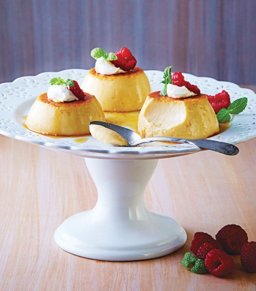

Flan de queso

Ingredientes
- 8 huevos
- 1 1/4 taza de leche
- 1/4 taza de leche condesada
- 1 taza de azucar
- 1 taza de queso crema
Preparacion
- Licua los huevos bcon las leches y el queso crema.
- Calienta el azucar en un sarten hasta que caramelice y colocala en 8 moldes pequeños. Vacia la mezcla de leches en los moldes y cubre con aluminio.
- Hornealos a baño maria a 130oC durante dos horas. Desmolda y decora.